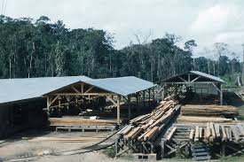
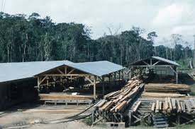

Краткое описание
Лесопилка Тэйлора в Дерри — это живой памятник XVIII–XIX веков, где вода и дерево встречаются в старинном механизме. Здесь можно увидеть, как шумели первые пилы Новой Англии, и почувствовать дыхание времени.
.jpeg)
 Derry
Derry
Лесопилка Тэйлора в Дерри — это живой памятник XVIII–XIX веков, где вода и дерево встречаются в старинном механизме. Здесь можно увидеть, как шумели первые пилы Новой Англии, и почувствовать дыхание времени.
🌲 Истоки
В 1799 году Роберт Тэйлор приобрёл землю у озера Баллард и вскоре построил свою лесопилку. Уже к 1805‑му она работала на воде, превращая тяжёлые брёвна в доски. Это была так называемая up‑and‑down sawmill — вертикальная пила, приводимая в движение водяным колесом. Для жителей Дерри она стала символом промышленного начала: именно такие механизмы обеспечивали строительство домов, мостов и дорог.
⚙️ Судьба и возрождение
Со временем оригинальная постройка исчезла, но легенда о ней сохранилась. В XX веке местный фермер и энтузиаст Эрнест Баллард решил воплотить мечту детства — построить заново рабочую лесопилку по старинным чертежам. В 1953 году он подарил государству не только саму лесопилку, но и 71 акр земли вокруг неё. Так появился Taylor Mill State Historic Site, ныне охраняемый как часть Баллардского леса.
🏛️ Что можно увидеть сегодня
• Работающий механизм: на определённые выходные лесопилка запускается, и посетители могут увидеть, как вода приводит в движение массивное колесо и вертикальную пилу.
• Атмосфера XIX века: деревянные балки, запах свежей стружки и шум воды создают ощущение путешествия во времени.
• Природа вокруг: лесопилка стоит в живописном месте у пруда Баллард, где можно прогуляться по тропам и устроить пикник.
✨ Значение для Дерри
Лесопилка Тэйлора — это не просто музейный объект. Она напоминает о том, как труд и изобретательность первых жителей превращали суровую природу в основу цивилизации. Здесь история оживает не в книгах, а в звуке пилы и блеске воды.
 
